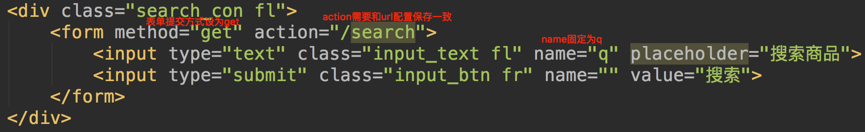
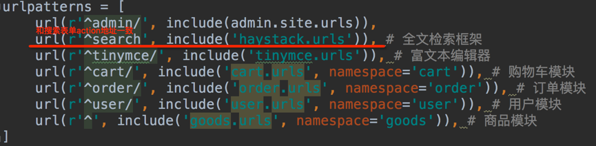

全文检索使用
- 1.搜索表单设置如下。 
- 2.在项目的urls中设置如下。 
- 3.点击搜索表单提交时，会通过haystack搜索数据。
1）搜索结果： 搜索出结果后，haystack会使用templates/search目录下的search.html来展示搜索结果页面。 2）传递的上下文包括： 2.1 query：搜索关键字 2.2 page：当前页的page对象 遍历page对象，获取到的是SearchResult类的实例对象，对象的属性object才是模型类的对象。 2.3 paginator：分页paginator对象